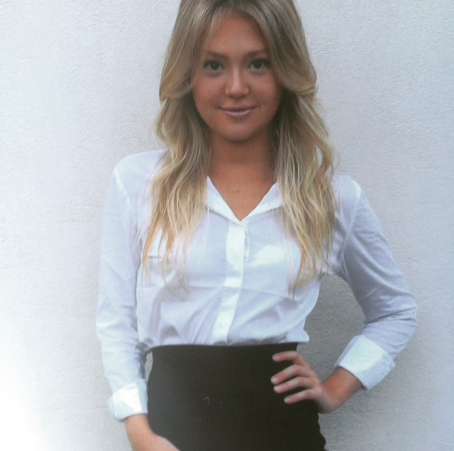

Curriculum Vitae
Descripcion personal

- Apellido: Sánchez
- Nombre: Déborah
- Fecha de nacimiento: 14-10-1993
- Tipo y número de documento: DNI: 36.711.145
- Estado civil: Soltera
- Domicilio: España 1476
- Localidad: Rosario
- Celular: (0341) 153-140001
- Mail: deborah.sanchez@hotmail.com
Educacion
- Educación secundaria: Instituto Superior Particular Incorporado Nº 9006 – Dante Alighieri - Rosario
Modalidad Economía y Gestión de las Organizaciones
- Curso Tripulante de Cabina de Pasajeros - C.I.C.A.R WHISKY BRAVO – Aeropuerto Islas Malvinas Rosario
- Basic – Intermediate – Advanced I – Advance II Program of English at “Global English International” – Rosario – 2015
Experiencias laborales
- Trabajo temporal (Noviembre 2012 a Febrero 2013) - La pipa de Popeye: Vendedora y asesora, limpieza del local, reposicion)
- Vendedora dietética Grandiet (Mayo – Agosto 2013) - Venta y promoción de los productos, reposición, limpieza y orden del lugar, caja, asesoramiento para suplementacion dietaria
- Recepcionista restobar Río Mío (Agosto – Diciembre 2014). Armado de mesas y reservas, atencion a los clientes, auxilio a los mozos en horas pico, orden del lugar del trabajo
- Camarera Johnny B. Good (Dicembre 2015 – Marzo 2016). Manejo de caja, atención y contacto con el público, limpieza y orden del lugar de trabajo
- Niñera de 3 chicos en Inglaterra (Junio – Diciembre 2016). Llevarlos al colegio, hacer con ellos la tarea, practica de lo aprendido en clases, lectura, comida y baño también a mi cargo
- Administrativa COAS (Enero 2013 – 2018) - Trabajo part time. Recepción de talones de pagos, cheques, pagarés y efectivo. Rendiciones de lo cobrado por los diferentes cobradores, sacar cálculos correspondientes a la comisión de cada uno
- Atención al público Village Cines (Junio 2017 – Septiembre 2017). Atención en boletería y candy bar. Venta de entradas y asesoramiento al público. Preparado de pororó, reposición de mercadería, asistencia en cumpleaños, soporte al área de piso en caso de ser necesario, manejo de caja, limpieza y orden del lugar
- Atención al cliente minimarket “Ali” (Agosto 2018 – Enero 2019). Manejo de caja, reposición, control de stock , colocación de los precios a los productos, atención fiambrería y artículos de librería, carga de celulares y tarjetas en el sistema
- Cadete Freelance para “PedidosYa” (Marzo 2019- Corriente). Servicio de cadetería en general
Skills
- Adaptable
- Abierta a nuevas ideas
- Buen manejo del trabajo en equipo
- Resiliente
- Dinamica
Hobbies
- Viajar
- Zumba
- Leer
- Maquillaje
- Andar en moto